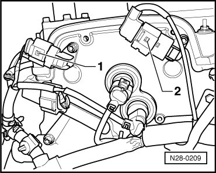
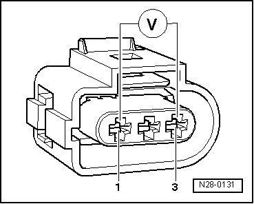
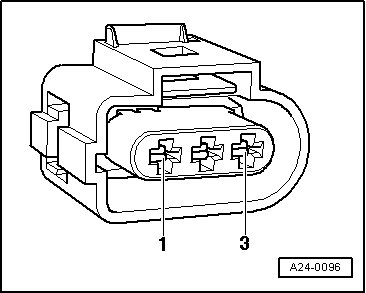
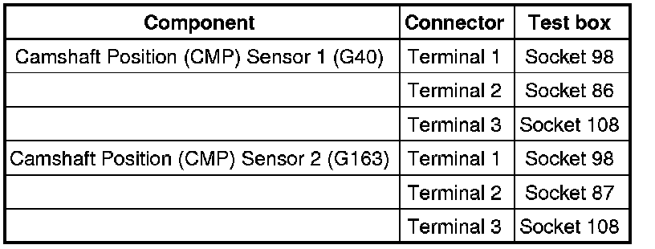

Camshaft Position Sensor: Testing and Inspection
Diagnostic Procedures
Camshaft Position Sensor, Checking
• Use only gold-plated terminals when servicing terminals in harness connector of sensors.
Special tools, testers and auxiliary items required
• Multimeter (VAG1526) or Multimeter (VAG1715)
• Connector test kit (VAG1594)
• Wiring diagram
Test requirements
• Fuses in E-box (plenum chamber, left) must be OK:

• Battery voltage must be at least 11.5 volts.
• All electrical consumers such as, lights and rear window defroster must be switched off.
• Parking brake must be engaged or else daylight driving lights will be switched on.
• For vehicles with automatic transmission, selector lever must be in P.
• If vehicle is equipped with an A/C system, it must be switched off.
• Ground (GND) connections between engine and chassis must be OK.
• Ignition switched off.
Test sequence
- Disconnect 3-pin connectors from Camshaft Position (CMP) sensors:

1. Camshaft Position (CMP) Sensor 1 (G40) intake camshaft
2. Camshaft Position (CMP) Sensor 2 (G163) exhaust camshaft
• Before disconnecting harness connectors, mark allocation to component.
Checking voltage supply
- Connect multimeter between terminal 1 (B+) and 3 Ground (GND) for voltage measurement for the respective connector for hall sensor.

- Switch ignition on.
Specified value: at least 4.5 V
- Switch ignition off.
If there is no voltage:
- Check wires to Engine Control Module (ECM) according to wiring diagram.
Checking wiring
- Connect test box to control module wiring harness , connect test box for wiring test.
- Check wires between test box and 3-pin connector for open circuit according to wiring diagram.

Wire resistance: max. 1.5 ohms

- Check wires for short circuit to each other.
Specified value: infinite ohms
- Erase DTC memory of Engine Control Module (ECM) , Diagnostic mode 4: Reset/erase diagnostic data.
- Generate readiness code.
If no malfunctions are found in the wires and there was voltage between terminals 1 + 3:
- Replace the respective Camshaft Position (CMP) sensor:
• Camshaft Position (CMP) Sensor (G40) ,
• Camshaft Position (CMP) Sensor 2 (G163).
- Erase DTC memory of Engine Control Module (ECM) , Diagnostic mode 4: Reset/erase diagnostic data.
- Generate readiness code.
If no errors are found in wires and there was no voltage between terminals 1 + 3:
- Replace Motronic Engine Control Module (ECM) (J220) --> [ Engine Control Module, Replacing ] Engine Control Module, Replacing.
Final Procedures
After the repair work, the following work steps must be performed in the following sequence:
1. Check the DTC memory. Refer to --> [ Diagnostic Mode 03 - Read DTC Memory ] Diagnostic Modes 01 - 09.
2. If necessary, erase the DTC memory. Refer to --> [ Diagnostic Mode 04 - Erase DTC Memory ] Diagnostic Modes 01 - 09.
3. If the DTC memory was erased, generate readiness code. Refer to --> [ Readiness Code ] Monitors, Trips, Drive Cycles and Readiness Codes.